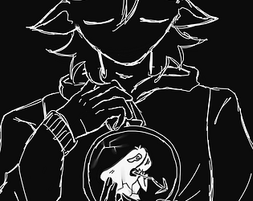

Future Dejá Vù
Future Dejá Vù es un juego de puzzles en el que el jugador tiene que manipular el tiempo para resolver el misterio que le persigue. Con un estilo único, el jugador se enfrentará a diferentes puzzles para poder salvar a su hermana. ¿Serás capaz de recuperar aquello que tanto amas? ¿O acabarás sucumbiendo a tu mayor enemigo, tú mismo?
Jugar